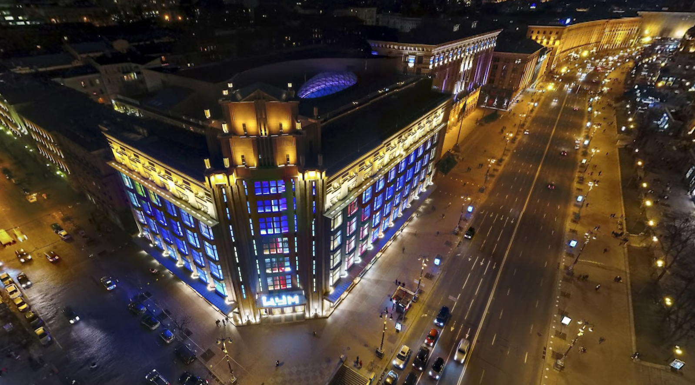

Overview
Client: ESTA HOLDING
Iconic, architecturally significant heritage redevelopment delivered under a DB-GC model; led design development coordination and full construction execution through a bonus-awarded handover.
Scope of Work
- Design & Documentation: As the project’s lead design company, Altis executed full design development and technical detailing. International consultants were engaged only for interior conceptual and schematic design — with
Benoy responsible for the concept and
Studio Four IV (London) for schematic design. During the detailed-design stage, all schematic solutions were comprehensively reworked and fully redeveloped by Altis to meet Ukrainian building codes and local by-law requirements while maintaining the original design intent.
- Delivered complete working documentation packages across structural (reinforced-concrete frame), architectural, and MEP disciplines — including HVAC, electrical power and lighting, plumbing, sprinkler and fire alarm systems, vertical transportation, and low-voltage networks.
- Construction Methodology: Developed detailed Method Statements and sequencing of construction operations for each phase of work, defining logistics strategies, safety procedures, and temporary utilities layouts to ensure efficient and safe execution within a constrained urban environment.
- Construction Management: Organized site setup, tower cranes, temporary power, access, and safety enclosures.
- Supervised completion of monolithic reinforced-concrete frame, columns, slabs, and shear cores with quality and geodetic control.
- Implemented structural monitoring for settlements, vibrations, and façade deformations.
- Managed roofing, façade, and glazing works in accordance with heritage preservation requirements.
- Directed MEP installation, sprinkler and smoke-control systems, elevators, and high-end retail interior finishes.
- Extra Low Voltage (ELV) systems: CCTV surveillance, Wi-Fi, structured LAN network, security alarm system (охранная сигнализация), anti-theft detection gates (противокражная система, рамки), background music (фоновая музыка), and public address / evacuation announcement system (система оповещения).
- Power Backup: Installation and commissioning of a diesel generator system to provide emergency power for life-safety and critical retail operations.
- Oversaw final landscaping, testing, commissioning, and documentation handover.
- Personal Contribution: Joined the project at approximately 85 % structural frame and 80 % façade completion, assuming responsibility for coordination of finishing trades, MEP integration, and luxury fit-out delivery through to successful handover.
Challenge
Preserve the historic façade and heritage value while completely transforming interior systems, structure, and visitor experience.
Solution
Implemented phased demolition and reconstruction with strict heritage protection measures; coordinated 3D reviews to pre-empt conflicts and streamline buildability.
Result
Zero-loss safety performance across delivery; 8% cost savings via value engineering, strategic procurement, and optimized sequencing; successful, bonus-awarded handover.
Project Facts
Virtual Tour

Interactive 360° virtual tour developed by
Nickolay “InnerDigitalUA” Omelchenko (Ukraine).
Click image to explore.